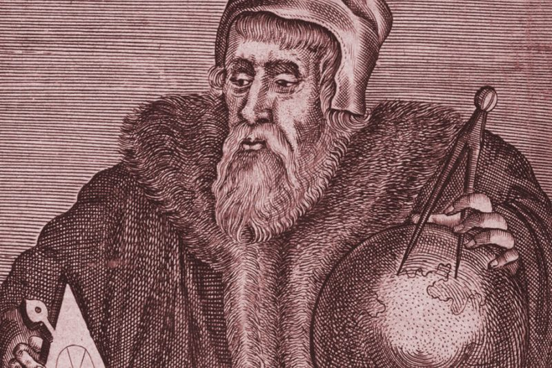

The History
The movement began not as a rebellion, but as a philosophy. Gellert Grindelwald, a wizard of unparalleled foresight, recognized that the International Statute of Secrecy—established in 1692—was no longer a shield for wizards, but a cage
Nurmengard: The birthplace of a new era.
Significant Milestones of the Movement
- The Nurmengard Declaration: The formal drafting of our guiding philosophy, establishing the "Greater Good" as our North Star.
- The Global Recruitment Drive: Successful establishment of underground sanctums in Berlin, Paris, and New York.
- Acquisition of the Elder Relic: A pivotal moment in magical history, securing the tool necessary to reshape the world.
- The Great Rally of 1927: A demonstration of loyalty where the true believers were separated from the hesitant through the test of the blue flame.
- The Alliance of the Pure: Unifying disparate wizarding factions under a single, sovereign banner for the first time in centuries.